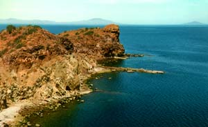
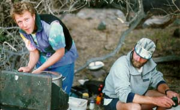

We were on the move early this morning, rising with the sun to beat the wind. Today we broke camp and headed eight miles south to Playa De Las Ballinas. Martin and Tom were nervous about the open water crossing considering yesterday's gale.
After loading the boats, we pushed off into still water. Our kayak was tracking well under the load, and we made the crossing just as a light breeze started up. We snacked on Mexican cookies in a sandy cove and found a disembodied hammerhead shark. Martin told us of a three-month expedition he took with friends when he was younger. They paddled the entire Sea of Cortez down the mainland coast. He talked about finding huge whale vertebrae on deserted beaches. I thought about how much I'd been enjoying the three days on the water thus far, but I couldn't seem to map this experience to a three month period of time. How do you go a whole season without a toilet, or shower, or even a roof?
On cue, the wind began blowing into our faces as we pushed off for the night's camping spot. The swells were not nearly as large this time, and our experience of yesterday had already built up our confidence. Yes, the wind was strong again, and we still were pushed backwards on occasion, but I didn't feel the frustration or panic of yesterday. We paddled and pushed and talked and joked under the salt and sun.

Later, as we approached our beach, we took a break to wait for a couple of kayaks that were lagging behind, including Tom's. Martin paddled in dozens of nervous little circles, and after 15 minutes looked noticeably upset. He took off looking for them, ordering the rest of us to paddle into a nearby cove. As the group turned in, Les and I noticed two wild horses on a different beach, licking the salt off the rocks. We headed for them, getting quite close before they spooked off into the brush.
We rejoined the rest of the group and waited nearly an hour before spotting a few bobbing specks on the horizon. We kayaked out to meet them, and found a grumpy Martin who explained that the other group had seen whales and chased after them.

Finally, we made camp on the beach and drank a few beers. Our guides started dinner as Les and I put large rocks on all of our gear to keep it from blowing away. As the sun set, the wind blew even harder, pelting us with sand. Martin's barometer showed rapidly falling pressure. That night, Les and I curled up tight in our bags as waves of sand swept over us. We woke up buried, and had to dig out for breakfast.